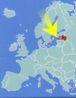
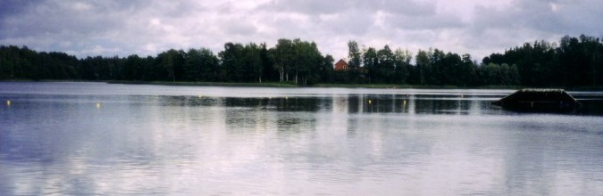

Waterskiing in Latvia.
|
Latvia in Europe  Graphic © Latvian Institute |

This is where the Latvian national water ski championships took place in 2003. It is in the eastern part of Latvia near the town of Preili. I skied there. It is a perfect natural site for waterskiing. The lake is small and sheltered, and there are grasses all around it that absord waves, yet the lake itself is sand-bottom, and therefore weed free. There are stands for people to watch, a huge boat house as well as a building with sauna and dinning rooms and overnight rooms.
This was the main training center for waterskiing during soviet communist times. Skiers were from what are now Latvia, Lithuania, Estonia,
Belarus and Russia. Apparently the Belarus skiers were exceptional. These skiers are now in there 30s, and so it is not surprising that they decided to host a seniors/masters (over 35 years) tournament in Russia this August.
Now the site is owned privately by a Latvian family. They are working hard to refurbish all the buildings and get better boats. It is there plan to turn it into a classy summer resort.
|